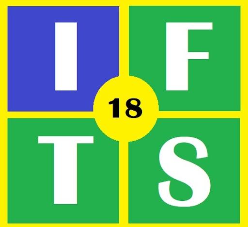

Instituto de Formación Técnica Superior N.º 18 (IFTS 18) | Tecnicatura Superior en Desarrollo de Software
Actividad: Primera versión funcional de la app-juego | Fecha de entrega: 16-10-2026

| Integrante | Rol | Tareas Realizadas |
|---|---|---|
| Martín Jonas Avilas | Líder IT & Desarrollador Android | Coordinación técnica, configuración de Gradle y SDK 34, desarrollo de arquitectura MVVM (GameViewModel, StateFlow), navegación con Compose, control del ciclo de vida en MainActivity y repositorio GitHub. |
| Roberto Araujo | Diseñador UX / Fundamentación | Fundamentación teórica sobre ciberapuestas, definición de tokens de color (Dark Slate, Magenta y Cyan Neón), contraste accesible WCAG AAA y ergonomía táctil en zona del pulgar. |
| Evelyn Gaitán | Narrative Designer & Multimedia | Redacción de diálogos y situaciones de Lunes a Domingo en relato.md, selección de audios (música VIP, latido, jingles) e integración de animaciones Lottie para Boti y el título del juego. |
| Juan Chaile | Game Designer & Prototipado | Diseño de la mecánica contrarreloj de 10s, prototipo interactivo en Figma, diseño de botones píldora y estructura modular de la pantalla final de resultados. |
| Lucía Marisol Pobeda | Investigadora UX / User Persona | Investigación de campo sobre hábitos de apuestas en escuelas secundarias, elaboración del User Persona (Mateo R., 15 años) e integración de canales de ayuda pública (Línea 141, Boti y Orientación). |
El repositorio contiene el código fuente de la aplicación, recursos para ejecutarla (incluyendo el APK compilado), documentación técnica, enlace al prototipo y láminas del Design System:
https://github.com/314-thon/DAM
Acceso público habilitado para visualización, clonación y revisión de código.